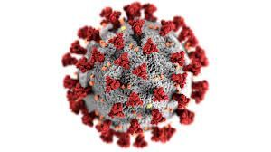
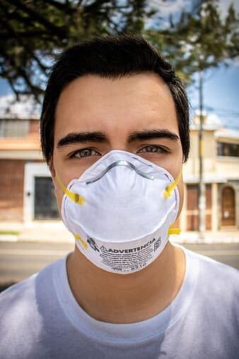

Challenge – Disease detectives: Modeling COVID-19

Un virus es un ente biológico con material genético de RNA o DNA capaces de infectar
a un ser vivo para poder continuar con su replicación. COVID-19 es una enfermedad causada
por el virus SARS-COV 2, un miembro de la familia de coronavirus.

 Para evitar infectarnos con este virus, el gobierno de México ha implementado normas recomendadas por la OMS (Organización Mundial de la Salud).
Dentro de éstas, la más importante es quedarse en casa. Al llevar a cabo esta medida, cuidamos no infectarnos ni infectar a las personas con las que llevamos a cabo la cuarentena. Como se sabe, hay personas que portan el virus sin presentar síntomas, éstas personas, a pesar de ser asintomáticas transmiten el virus, por lo que la única forma de no estar expuesto a éste virus es con el famoso “quédate en casa”. Esto puede ser imposible para muchas personas, por lo que deberas seguir las siguientes medidas
Usar cubrebocas si sales a un lugar publico, éste debe de taparte nariz y boca. A pesar de traer el cubrebocas, se debe de estornudar con el el codo protegiendo la boca para evitar tocar el cubrebocas con las manos. De lavarlo con cada uso, y asegurarte que te cubra nariz y boca, se puede utilizar un cubrebocas de tela.
Para asegurarnos de que el uso del cubrebocas sea eficaz, debemos de mantener una distancia de 1.5 metros , por lo menos, con el resto de las personas. Susana distancia es el método utilizado para poder llegar a diferentes sectores de la población, incluyendo a niños.
class="img-fluid" src="img/PHOTO-2020-08-13-21-33-45.jpg" align="right">
Es importante que lavemos las manos constantemente con agua y con jabón ya que este ayuda a desintegrar al virus rompiendo una capa de fosfolípidos que conforma al virus. El uso de alcohol-gel también es recomendado si cumple con el porcentaje de alcohol necesario, el cual es de 70%. Esto se debe de hacer con frecuencia en tu casa o al salir pero deberas hacerlo cada que llegues a casa de la calle.
Es importante también que tengas limpia tu casa y que limpies con agua y jabón lo que adquieras en el supermercado, tiendas, mercados, paquetería, etc.
Es necesario que de tener sospechas sobre tener el virus, recurras a las lineas de atención COVID-19 desde cualquier parte de la república Mexicana: 800 004 48 00 el cual está disponible las 24 horas del día.
Referencias
Secretaria de salud. (2020). COVID-19. Estado de México. Secretaria de Salud del Estado de México. Recuperado de https://salud.edomex.gob.mx/salud/covid
Gobierno de México. (2020). Todo sobre el COVID-19. México. Coronavirus. Recuperado de https://coronavirus.gob.mx
Gobierno de México. (2020). IMSS. México. Sana Distancia y medidas generales de higiene, principales recomendaciones ante el retorno a la Nueva Normalidad. Recuperado de http://www.imss.gob.mx/prensa/archivo/202006/382
Gobierno de México. (2020). Secretaría de Salud. México. RECOMENDACIONES PARA LA POBLACIÓN (COVID-19). Recuperado de https://www.gob.mx/salud/documentos/covid19-recomendaciones-para-la-poblacion
Gobierno de México. (2020). Secretaría de Salud. México. SANA DISTANCIA COVID-19. Recuperado de https://www.gob.mx/salud/documentos/sana-distancia
EL FINANCIERO. (22/04/2020). México. Susana Distancia' ya es una heroína de Disney: la empresa comparte su información sobre COVID-19. [Figura]. Recuperado de https://www.elfinanciero.com.mx/nacional/empresas-de-transporte-privado-nos-estan-apoyando-durante-la-emergencia-sanitaria-salud
Organización Mundial de la Salud. (2020). Nuevo coronavirus 2019. Preguntas y Respuestas sobre la enfermedad por coronavirus (COVID-19). Recuperado de https://www.who.int/es/emergencies/diseases/novel-coronavirus-2019/advice-for-public/q-a-coronaviruses